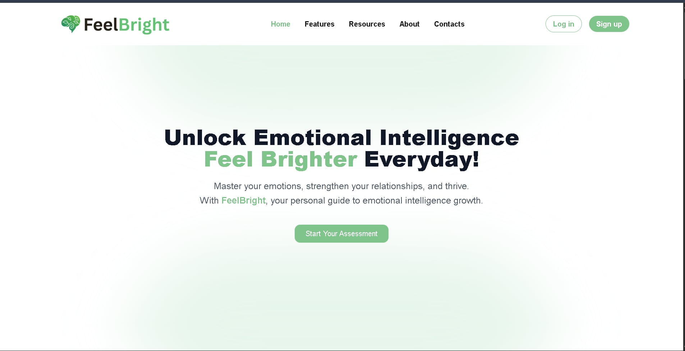

FeelBright
Updated Case Study Build
A Web-Based Emotional Intelligence Assessment and Improvement System
FeelBright is a full-stack platform developed to help students assess and improve emotional intelligence in a structured, research-backed way. It combines guided self-assessment, personalized interpretation, wellness support, progress history, and a faculty-facing portal for academic monitoring.

Developed in Collaboration With
Edznahar Pineda Junaz
Benigno Rodrigo O. Mandras
Contents
01 • Overview
Free and Accessible, Research-Backed, Built for Students and Faculty
FeelBright was designed for educational use where affordable and practical EQ tools are often missing. The assessment model is based on Daniel Goleman's five-domain framework and was aligned with the needs of student self-development and faculty monitoring.
Free and Accessible
The platform is accessible through a browser without subscription costs, making it usable for students and outreach participants.
Research-Backed Assessment
Domain coverage includes self-awareness, self-regulation, motivation, empathy, and social skills using a structured assessment flow.
02 • Problem and Solution
Addressing the EQ Assessment Gap in Academic Programs
The Psychology Department had IQ testing processes but no equivalent emotional quotient tool. Without a dedicated system, project facilitators could not consistently measure emotional growth, monitor participation impact, or produce reliable progress records for Project HR.
The Problem
Existing alternatives were either too expensive, too clinically oriented, or not suitable for continuous development in an academic setting.
The Solution
FeelBright introduced a free end-to-end platform with assessment, interpretation, wellness content, progress tracking, and admin analytics.
03 • Public Landing Page
Clear First Impressions and Guided Entry Points
The landing page explains the platform in simple language, previews resources, and guides visitors to register or explore with minimal friction.
Resource Preview
Visitors can review articles, wellness guides, and learning materials before creating an account.
Clear Entry Points
Sign Up and Explore actions are visible across the page for smoother first-time navigation.
04 • Authentication and Onboarding
Simple Registration, Email Verification, and Welcome Guidance
Users register with basic credentials and verify access through email. A first-login onboarding modal introduces the major sections to shorten the learning curve.

Simple Registration
Name, email, and password create a complete account without unnecessary fields.
Email Verification and Onboarding
Verified sign-up improves account integrity while guided onboarding helps users begin with confidence.
05 • EQ Assessment
Five-Domain Assessment with Structured Progress
The core module guides respondents through reflective prompts using a fixed sequence and visible progress indicator. This makes completion more manageable and keeps interpretation consistent across users.

Self-Awareness
Self-Regulation
Motivation
Empathy
Social Skills
Domain Definitions
Each domain targets a distinct emotional capability so users can identify precise strengths and weaknesses.
Assessment Experience
Progress markers and consistent question flow reduce confusion and encourage full completion.
06 • Results and Feedback
Readable Insights with Overall and Domain-Level Results
After submission, users receive an overall EI percentage with interpretation labels and per-domain breakdowns. Results can be saved for history tracking and exported for reporting needs.

Overall EI Score
A top-level score provides a clear summary of current emotional intelligence status.
Domain Breakdown and Export
Domain analytics support targeted growth plans while report export helps with faculty submission workflows.
07 • User Dashboard
Continuous Growth Space Beyond One-Time Testing
The dashboard is the long-term engagement layer where users revisit assessments, access resources, complete wellness activities, and review progress over time.

Wellness Exercises and Resources
Includes mindfulness activities, journaling prompts, and educational guides for regular self-improvement.
Progress Tracking and Profile History
Historical records and trend visualizations make emotional development visible and measurable.
08 • Admin Portal
Faculty-Side Monitoring and Content Administration
A separate admin interface supports educational facilitators with analytics, content workflows, and user oversight without disrupting student-facing interactions.

Analytics
Tracks participation rates, completion patterns, and aggregate score movement.
Content and User Management
Enables updates to materials, review of profile activity, and generation of program reports.
09 • Database Architecture
Three-Layer Architecture with Five Core Tables
FeelBright runs on a modern web stack with clear separation between interface, service logic, and data persistence.

React and Tailwind (UI Layer)
Node.js and Express (Server Layer)
PostgreSQL (Data Layer)
| Table | Stores | Description |
|---|---|---|
| users | Account data | User identity information including name, email, profile image, and account timestamps. |
| assessments | Assessment structure | Domain setup, descriptions, and question definitions used by the EQ engine. |
| results | Score records | Overall EI scores, per-domain values, and generated feedback outputs. |
| resources | Content library | Articles, guides, and wellness activities accessible within the dashboard. |
| sessions | Activity log | Assessment attempts, completion states, and interaction timestamps. |
10 • Reflections and Next Steps
What Worked, What We Learned, and What Is Next
A major challenge was translating a psychological framework into a user experience that feels intuitive, especially for non-technical participants. User testing sessions helped uncover friction and improve clarity.
What Went Well
The five-domain assessment flow, personalized feedback generation, and admin monitoring tools performed well in evaluation use.
What Is Next
Planned enhancements include mobile optimization, multilingual support, and deeper recommendation logic for personalized growth plans.
Tech Stack
HTML5
CSS3
JavaScript
Node.js
Express.js
PostgreSQL
Tailwind CSS
Git